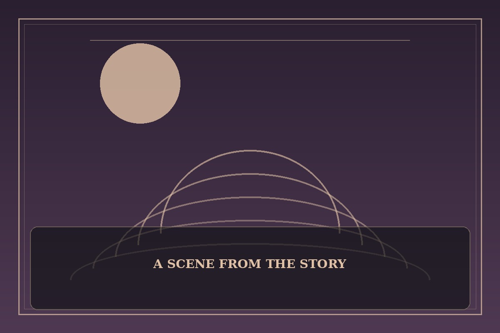

Doom Breaker
Synopsis
After a catastrophic defeat, a warrior receives another chance to face the force that ruined his world. His memories offer an advantage, but revenge threatens to consume the future he hopes to protect.
Chapter 1: Before the Last Dawn
The battlefield was quiet except for ash falling like snow. Kael remembered the names of those who had died beside him, and the terrible certainty that the enemy would return before sunrise.
Then the sky folded inward and time dragged him backward to a morning years earlier. The city was alive again; the baker argued with a customer, children chased a wooden hoop, and the bells rang as if no disaster had ever happened.
Kael could use his knowledge to prepare an army—or turn every waking hour into a hunt for vengeance. When he saw the same child who had died in his arms laughing in the street, he lowered his sword. This time, he would fight for the people who still had a future.

This fan-made sample is an original piece created for a student website project; it is not an official chapter of Doom Breaker.